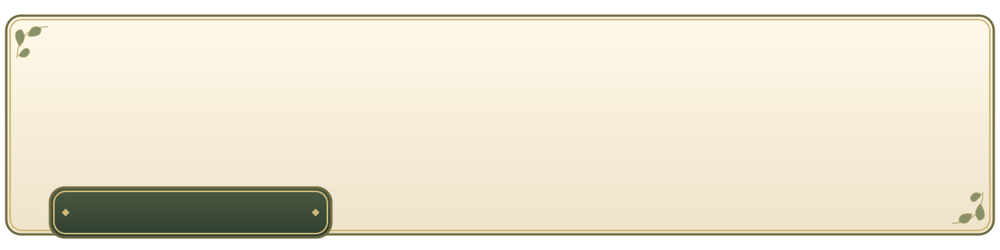
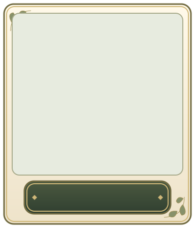
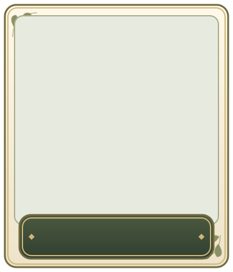
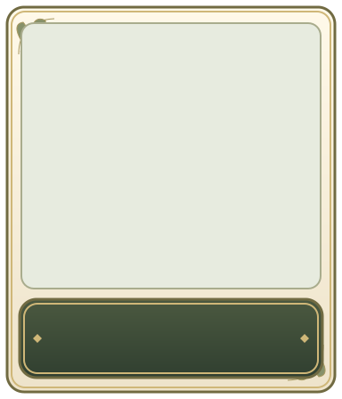
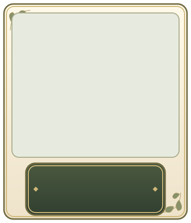
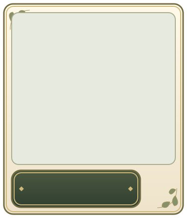

320×64 px · 캔버스 1280×320
이 꽃은 마음에 반응해 빛을 낸단다.천천히 살펴보렴.
400×72 px · 캔버스 1280×320
300×64 px · 캔버스 1280×320
360×64 px · 캔버스 1280×320

520×80 px · 캔버스 1280×320
288×64 px · 캔버스 384×448

320×72 px · 캔버스 384×448

340×88 px · 캔버스 384×448

280×104 px · 캔버스 384×448

264×76 px · 캔버스 384×448

참조 이미지는 자리 표시용입니다. 카드 제목은 모든 안에서 이미지 아래에 배치했습니다.